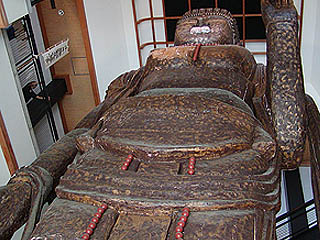

飛騨大観音/岐阜県高山市
>日本すきま漫遊記のページで見て以来ずーっと気になっていた飛騨大観音を見に行く。 これが件の大観音堂だ。 場所は国道41号線の高山市と宮村の市村境付近。道向いには日帰り温泉がありこちらには結構車が出入りしている。 大観音堂の方はといえば・・・推して知るべし。 大観音堂は三階建て風の立派な朱塗りの建物だ。 ただデザイン的には平屋のお堂を無理矢理三階の高さに引き延ばしたような形なのでかなり異様な建物となっている。 飛騨開運乃森で見た七福神堂みたいです。 三階には欄干が回してあるので三階までは行けるのだろうが、気になるのは三階正面の開口部。 欄干が正面だけ切れている。一見トマソン物件っぽいが、これは参拝客が外に出るためのモノではなく東大寺の大仏殿などでもみられる大観音が外を見るための開口部と考えられる。 ・・・としたら相当大きい観音像が期待出来るぞ！！ と期待を秘めつつ大観音堂に向かう。 手前の建物にはレストランがあったが閉店しており、観音堂自体もかつては有料施設だったが現在は無料。 レストランをスルーして観音堂の正面入口から中に入ると・・・ うっひょ〜。でかい。 三層分吹き抜けの中央に鎮座する大観音さんはあまりにも大きくて下半身しか見えない。 近寄って見上げるとこんなんです。 この大観音は高さ15メートル。昭和61年に完成した。 角材の寄せ木造りということだが、木像でここまで大きい観音像はそうないだろう（大仏だったら「座り」で15メートル級×3体の但馬大仏、弁財天だったら鹿児島の最福寺の18.5メートルというマンモスレコードがあるが）。奈良の長谷寺、鎌倉の長谷寺、赤田の大仏など国内最大級と呼ばれる観音像が10メートル前後である事を考えると恐らく観音像では日本一の木彫像ということになるのではなかろうか。 その15メートルという大きさ以上に大きく見えるのは観音堂が観音像に密着するかのようなスケーリングで建っているからだろう。 屋外で15メートルの観音像だったらさほどでもないがやはり屋内の15メートルは相当大きく感じる。 しかも堂内には階段があり大観音の大きさを実感しながら三階まで登れるようになっているのが他の屋内の大観音や大仏と大いに異なる点である。 大観音の大きさ云々よりもむしろそっちの方が嬉しいですね。 鉄骨造の観音堂と大観音は現場で平行して造られた。お互いやり難かっただろうなあ。  観音像の左右には階段が取り付いている。左右の階段は一番奥まで昇り切ると今度は観音像裏手の壁に沿ってそれぞれ左右の通路がX状に交差して最上部に至る。 最上階のノボリ付近にいる愚息と比べるとその大きさがお判りいただけるかと思う。 台座は地下部分にあるので丁度一階と大観音の足の高さが同じレベルになっている。ちなみに地下部分には正式な階段はない。作業用の脚立が架かっていて、降りようと思えば降りられない事もないのだが何もなさそうなので降りませんでした。 右階段を登り切ったところ。ここから裏の壁に沿って階段を登り中央の踊り場に至る。 壁面にはずーっと観音様の掛け軸が並んでいる。百観音だったのかもしれない。 観音像の向かいの赤い鎧戸は一階正面入口の真上で、丁度レベル的には二階になる。ここが開く事はあるのだろうか？ 左右の階段が交差する踊り場は丁度観音像の真裏で、2階と呼んでもいいのはわずかにこのスペースだけ。踊り場の床には四国八十八ケ所の略式御砂踏所が。 そして踊り場を経由してさらに階段を登るといよいよ最上階に到着する。 そして、いよいよ大観音さんに正面から御対面、である。 ・・・ゴージャスな観音堂を一気にズッコケさせてくれる位の破壊力を秘めたイイお顔。 この顔が間近で拝めて大変満足である。豪邸に住む15メートルの子供みたいなアンバランスさが堪らない。 ただ表面の金塗りはもう少し丁寧な方がいいと思うんですけど・・・ 下を見下ろすとその大きさに改めて驚く。 最上階正面にはやはり開口部があり、大観音さんが外を眺められるようになっている。ここを開けてあったら転落者続出だろうな〜。 なんせ足場まるで無しですから。 で、外側の欄干には左右の扉から出られる。外に出てみたが風が気持ちよかった。 気になるのは右胸部分の剥落。 ここから落下したのかなあ〜。もし下に人が・・・いる訳ないか。 このような顔まで登れる大仏殿システムは岐阜のかご大仏などでも見かけたが、これほどの高さを持ち、なおかつこれほど参拝者が気軽に登れるところもそうそうないだろう。単に下から見上げるだけでなく、上から見下ろすという行為によってさらに大観音の大きさを実感することが出来るという点において現代の巨大観音にみられる胎内巡りの原形ともいえるかもしれない。参拝者がアクティブに動くという点に於いてもこれはネガポジ逆転した胎内巡りとは言えまいか？言えないか・・・
2003.9.
珍寺大道場 HOME